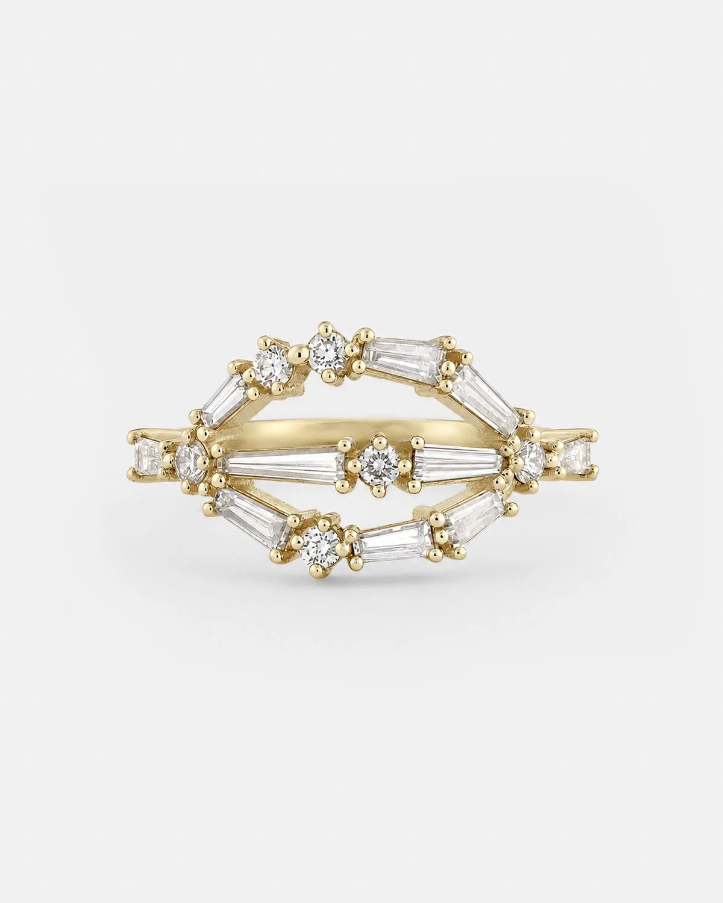

lila
LILA נוצרה כמחווה לסבתה שהייתה מקור להשראה בפשטות, באצילות ובאומץ ללכת בדרך משלה. בטבעת משולבים יהלומים שהותיר אחריו סב המשפחה, שהיה יהלומן. הגדלים והצורות השונים שלהם נשמרו במכוון, מבלי להפוך אותם לאחידים. כך הופכת הירושה לבחירה אישית, הנושאת הלאה ערכים של פשטות, חופש ועצמאות.